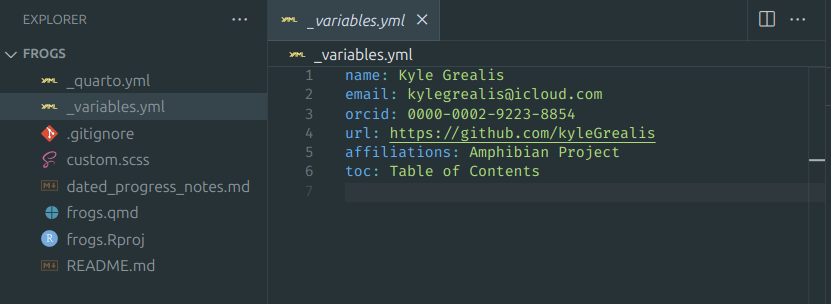

froggeR streamlines your Quarto workflow by providing two powerful
functions: quarto_project()
for complete project initialization and write_quarto()
for individual document creation. This vignette demonstrates how to use
these functions effectively and how they work together.
Project Creation
Complete Project Setup
The quickest way to start a new Quarto project:
>> froggeR::quarto_project(name ="frogs")This will create a new Quarto default project as a folder named frogs in/home/kyle.Do you want to proceed (Y/n)? Y✔ Created Quarto project directory: frogs✔ Created _quarto.ymlℹ Copying existing froggeR settings...✔ Created _variables.ymlℹ Copying existing froggeR brand settings...✔ Created _brand.yml✔ Copying existing froggeR logos.✔ Created custom.scss✔ Created .gitignore✔ Created README.md✔ Created dated_progress_notes.md✔ Created frogs.qmd with examples✔ Created references.bib✔ froggeR project setup complete. Opening in new session...
This single command creates a complete project structure:
Component
Description
frogs/
Main project directory
frogs.qmd
Main Quarto document
_quarto.yml
Reusable project settings
_variables.yml
Reusable document settings
_brand.yml
Reusable brand style settings
custom.scss
Style sheet template
dated_progress_notes.md
Project documentation
README.md
Project documentation
.gitignore
Enhanced security settings
references.bib
Example citation template
Understanding Project Components
Each component serves a specific purpose:
Quarto Document (_quarto.yml)
Pre-configured YAML to import _variables.yml
Links to styling files
Familiar format toggles
Project Settings
(_variables.yml)
author: Your Nameemail: your.email@example.comaffiliations: Your Institution

Project metadata
Brand Settings (new for froggeR v0.5.0;
_brand.yml)
Preconfigured branding file
Examples for adding logo, color, & typography
Save your personal or team art in the logos/
directory
Add a consistent style across your Quarto
documents
Style Sheet (custom.scss)
Professional defaults
Customizable elements
Clear documentation
Individual Document Creation
Create a new Quarto document in an existing project:
froggeR::write_quarto(). Use the
example = TRUE to incorporate template cross-referencing,
hyperlinks, and other useful Quarto writing tools.
Rendered Output
Example output of custom_yaml document
Note: This example uses a froggeR version pre-0.5.0
though the main heading will render the same… you get the point ;)
Workflow Integration
Project-Level Workflow
Best practices for project organization:
Initial Setup
# Create new projectfroggeR::quarto_project(name ="frogs")
# Data preparationfroggeR::write_quarto(filename ="01_data_prep")# AnalysisfroggeR::write_quarto(filename ="02_analysis")# ResultsfroggeR::write_quarto(filename ="03_results")
Note: When working in a froggeR project,
write_quarto() automatically uses your project’s
_variables.yml settings by default, ensuring consistent
styling and metadata across all documents.
Document Customization
Modify individual documents while maintaining project consistency. In
other words, the document-level YAML structure takes precedence
and will override project-level settings found in
_variables.yml and _quarto.yml.
YAML Additions
---title:"Analysis Results"author:"{{< var author >}}"date: last-modifiedformat:html:code-fold:truetoc:true---
Style Variations
Uncomment chosen lines in the custom.scss file
(provided)